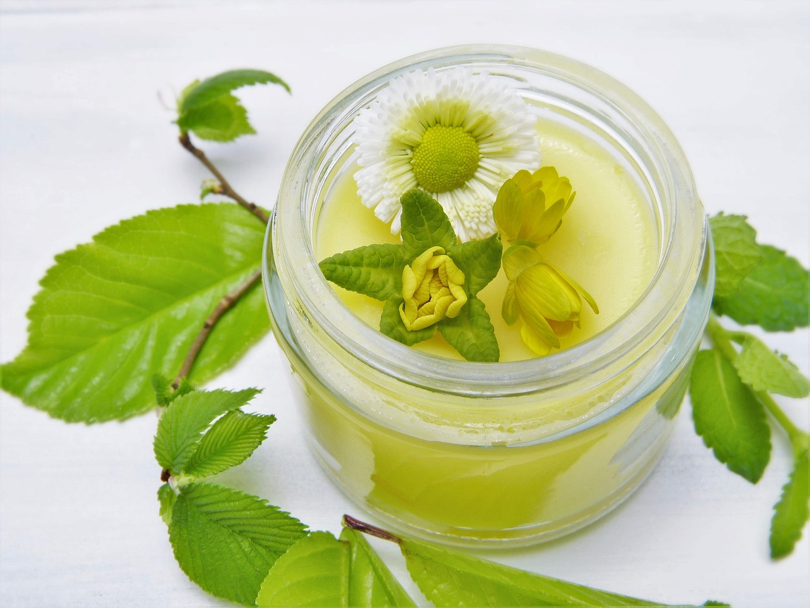

10 influencers ecológicos para seguir con ayuda de las herramientas de búsqueda de las redes sociales
22 de enero de 2025
La preocupación por el medio ambiente no solo ha sido demostrada por las actividades que los «ecoinfluencers» han llevado a cabo en físico, sino también a través de las actividades que estos llevan a cabo a través de las redes sociales.
No obstante, ¿quiénes son estos influencers ecológicos y qué es lo que demuestran en las redes sociales? Su número supera a los cientos de miles, pero en España son 10 los que más sobresalen en este ámbito:
¿Cómo encontrar a estos influencers en redes sociales?
Dar con estos personajes del mundo digital es muy fácil gracias a las herramientas que las redes ofrecen. Según un estudio realizado por ExpressVPN, mucha de la información que los internautas buscan es fácil de encontrar gracias a la IA, herramienta que busca lo que más le interesa al usuario según su historial de búsquedas previas.
Por ejemplo, muchos internautas son capaces de dar con los nombres de influencer reconocidos como los 10 más conocidos en España:
- Carlota Bruna: : Carlota no solo es influencer verde, sino que también es embajadora de España en el Pacto Europeo por el Clima. Muchas de sus publicaciones consisten sobre reflexiones acerca de los animales y el clima.
- Javier Clemente (Todos somos reciclaje): este influencer es uno de los más populares en España por sus iniciativas acerca de la gestión sostenible de residuos. Cuenta con más de 150 mil seguidores y realiza charlas regularmente sobre ecología..
- Gotzon Mantuliz: Gotzon es un naturalista que viaja de forma regular, siempre incentivando las prácticas ecológicas por cada rincón por el que pasa. 
- Paula Villaboy (Blondiemuser): una influencer preocupada tanto por el medio ambiente como por el estilo de vida diario. A veces suele compartir consejos sobre cosméticos ecológicos en sus redes sociales de TikTok e Instagram.
- Maria Negro (Consumeconcoco): esta jóven se dedica a la promoción de marcas sostenibles y su consumo responsable. También incentiva prácticas responsables y que benefician al medio ambiente.
- Marta Canga (Martacangaskin): otra influencer dedicada a las marcas sostenibles, así como a la promoción de artículos de belleza 100 % ecológicos.
- Mariana Mantija: el arte es la firma de esta influencer, con el cual busca concientizar a sus seguidores que deben proteger al medio ambiente.
- Patri y Fer (Vivir sin plástico): este par de personalidades en el mundo verde incentivan a sus usuarios a promover el uso de productos biodegradables y evitar el sobreuso del plástico.
- Noemí Rodríguez (Viviendo consciente): la meta de esta influencer es promover un estilo de vida minimalista. Su especialidad es la creación de productos de uso básico hechos en casa, como cremas o desodorantes.
Todos unidos por el medio ambiente
Puede que los métodos de todos estos influencers para difundir sus consejos sea diferente, pero todos comparten un objetivo en común: usar las redes sociales como el principal método de comunicación para decirle al mundo que existen maneras ecológicas de cuidarlos. Después de todo, está en manos de la humanidad cuidar el planeta que todo les ha dado.